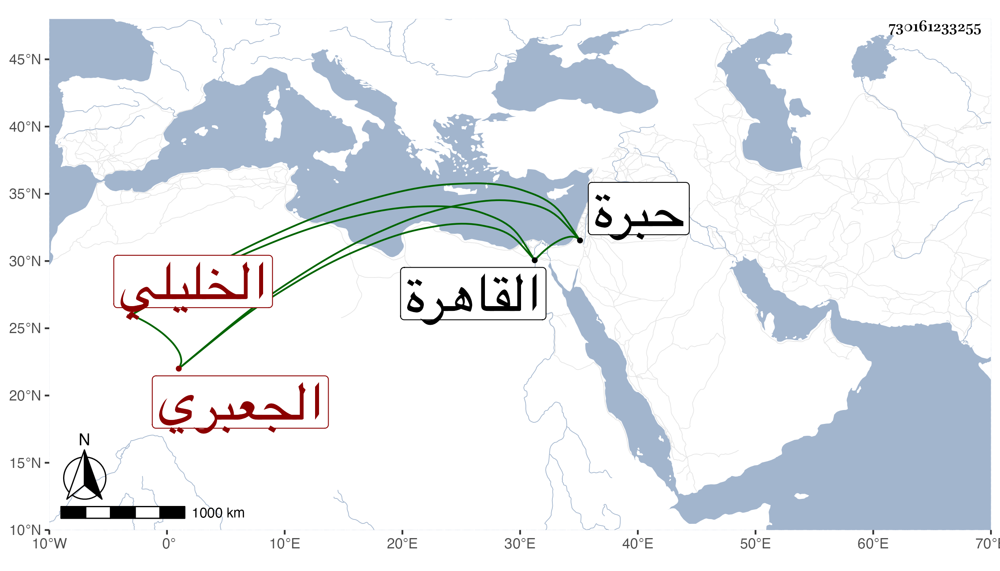

0902Sakhawi.DawLamic.ITO20230111-ara1.EIS1600.730161233255
Biography ID: 730161233255
876
إسحاق بن عمر بن محمد بن علي بن محمد بن إبراهيم التاج والشرف بن السراج بن الشمس الجعبري الخليلي . ولد في شعبان سنة ثمان وستين وثمانمائة بالخليل ونشأ بها وحفظ المنهاج وألفية النحو واشتغل يسيرا وقدم القاهرة فسمع من المسلسل ورجع فمات في العشر الأخير من جمادى الثانية سنة أربع وتسعين ودفن بتربة الرأس إلى جانب والده أرخه ابن أخيه الصلاح خليل ووصفه بالشيخ العالم الفاضل .
